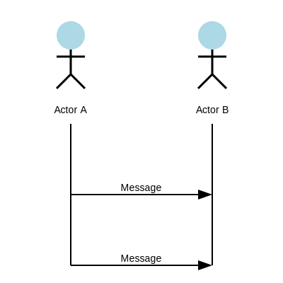

## Introducion
`cmd-polkit` is a tool that allows to easily customize the UI used to authenticate on polkit
## How it works
It works by calling the defined command and communicate via stdin and stdout,
the command receives the message from stdin and sends it by writing to stdout,
each line represents a message, the format used for communication is JSON.
The next figure show a sequence diagram of an authentication process. The
"command" agent is the application to execute using the --command,
or -c argument

Fig.1 - authentication process
## Authentication handling mode
To run cmd-polkit, it is required to explicitly select the authentication handling
mode: serial or parallel. This section explains each mode usage.
### Serial
The serial mode, executed with `--serial`, or `-s` argument,
all polkit authentication are handled one at a time.
The next figure show a sequence diagram of an multiple authentication processes
using serial mode. You will note that even after requesting a second authentication
the command will only run after finishing the first authentication process.
Fig.2 - authentication process in serial mode
This is good for running GUI propmt applications that cannot have mutliple instances
at the same time, like [rofi](https://github.com/davatorium/rofi).
### Parallel
The parallel mode, executed with `--parallel`, or `-p` argument,
Polkit authentication processes are handled in parallel.
The next figure show a sequence diagram of an multiple authentication processes
using serial mode. Each command can handle the process independently.
Fig.3 - authentication process in parallel mode
This is good for running GUI propmt applications that can have mutliple instances.
It is up to the user to define which mode is compatible with the GUI application that he
wishes to use without needing to create and maintain a daemon for authentication in serie
## Message schemas
### Authentication request
When polkit request authentication, cmd-polkit will send a message
to command stdin that respects the following schema:
- `action` is hardcoded to show `"request password"`
- `prompt` tha password input label, in other words, the prompt message to show to the user, just before the password input
- `message` is the the message to show to the user
- `polkit action` represents the polkit action related to the application that requests the authentication. Respects PolkitActionDescription[1] more about actions on the Polkit documentation[2]
- `id` is the polkit action ID
- `description` A human readable description of the action, e.g. “Install unsigned software”.
- `message` A human readable message displayed to the user when asking for credentials when authentication is needed, similar but not always equal to root `message`.
- `vendor name` is the name of the project or vendor that is supplying the action.
- `vendor url` is the url of the project or vendor that is supplying the action.
- `icon name` is the icon representing the project or vendor that is supplying the actions.
To give an example when executing `pkexec echo 1` in a terminal with cmd-polkit active,
the message it is send to command is similar to the following code
### Authentication response
After the _authentication message request_ is sent, it will expect
a response from command stdout that respects the folloing schema,
it will use the password to authenticate to polkit
{
"action": "authenticate",
"password": string
}
### Authentication result
After authentication attempt is made is made, a message will be
sent to command to show the result
If the authentication is successful, a SIGINT message is sent to command
to finish it, otherwise, another _authentication message request_ is sent to command
## References
1 https://www.freedesktop.org/software/polkit/docs/latest/PolkitActionDescription.html#polkit-action-description-get-annotation, last seen on
2 https://www.freedesktop.org/software/polkit/docs/latest/polkit.8.html, last seen on